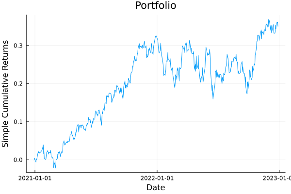
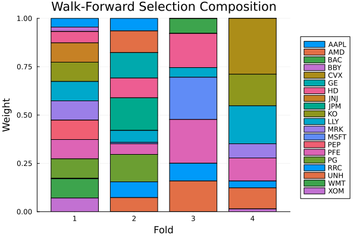

The source files can be found in examples/.
Time-dependent optimisers
The page on time-dependent constraints changed the inputs of one optimiser from fold to fold. This page changes the optimiser. A TimeDependent whose values are whole optimisers is a schedule of optimisers, and you can put it in two places.
- In place of the optimiser, as the estimator you pass to
cross_val_predict. Foldiruns entryi. - In a field that takes an optimiser. That is a fallback
fb, the inner or outer optimiser of a meta-optimiser, or the optimisation step of aPipeline.
The constraint page states which inputs can change from fold to fold. The choice of optimiser is one of them, because it is part of the problem a fold solves.
A field that takes an optimiser differs from a constraint field in one way. A constraint field has a static default, which a solve with no folds uses. A required optimiser field has none. A schedule there needs the default keyword to state which optimiser a solve with no folds runs. Without it, that solve throws.
This page builds one backtest that switches strategy with market volatility. It runs a defensive strategy when the market is turbulent and an aggressive one when the market is calm.
using PortfolioOptimisers, PrettyTables# Format for pretty tables.resfmt = (v, i, j) -> begin if j == 1 return v else return isa(v, Number) ? "$(round(v*100, digits=2)) %" : v endend;1. Setting up
We load three years of daily prices and define two MeanRisk strategies that are easy to tell apart. The defensive one minimises the variance with a cap of 10 % on every weight. The aggressive one maximises the ratio of return to risk with no cap. A walk-forward that trains on one year and rebalances every half-year gives the folds.
using CSV, TimeSeries, DataFrames, Clarabel, Statistics, StableRNGsX = TimeArray(CSV.File(joinpath(@__DIR__, "..", "SP500.csv.gz")); timestamp = :Date)[(end - 252 * 3):end]rd = prices_to_returns(X)slv = [Solver(; name = :clarabel1, solver = Clarabel.Optimizer, settings = Dict("verbose" => false), check_sol = (; allow_local = true, allow_almost = true)), Solver(; name = :clarabel2, solver = Clarabel.Optimizer, settings = Dict("verbose" => false, "max_step_fraction" => 0.9), check_sol = (; allow_local = true, allow_almost = true))];defensive = MeanRisk(; obj = MinimumRisk(), opt = JuMPOptimiser(; slv = slv, wb = WeightBounds(; lb = 0.0, ub = 0.1)))aggressive = MeanRisk(; obj = MaximumRatio(), opt = JuMPOptimiser(; slv = slv))wf = IndexWalkForward(252, 126)n = n_splits(wf, rd)4To find which strategy a fold ran, we backtest both static strategies once and compare weights. A fold of the schedule that solves the same problem on the same window gets the same weights. which_strategy names a fold by the static backtest whose weights it matches.
pred_def = cross_val_predict(defensive, rd, wf)pred_agg = cross_val_predict(aggressive, rd, wf)function which_strategy(pred, i) w = pred.pred[i].res.w return if isapprox(w, pred_def.pred[i].res.w; rtol = 1e-6) "defensive" elseif isapprox(w, pred_agg.pred[i].res.w; rtol = 1e-6) "aggressive" else "other" endend;2. A schedule in place of the optimiser
The plainest form is a vector with one optimiser per fold, which you pass to cross_val_predict as the optimiser. Here the strategy alternates with the fold number. Entry i is the whole optimiser of fold i, as entry i of a constraint schedule is the whole value of its field.
calendar = TimeDependent([isodd(i) ? defensive : aggressive for i in 1:n])pred_cal = cross_val_predict(calendar, rd, wf)pretty_table(DataFrame(:fold => 1:n, :ran => [which_strategy(pred_cal, i) for i in 1:n], :max_weight => [maximum(p.res.w) for p in pred_cal.pred]); formatters = [resfmt])┌───────┬────────────┬────────────┐
│ fold │ ran │ max_weight │
│ Int64 │ String │ Float64 │
├───────┼────────────┼────────────┤
│ 1 │ defensive │ 10.0 % │
│ 2 │ aggressive │ 16.9 % │
│ 3 │ defensive │ 10.0 % │
│ 4 │ aggressive │ 28.87 % │
└───────┴────────────┴────────────┘The odd folds ran the capped minimum-variance strategy. The even folds ran the aggressive one, with more concentrated weights. Nothing after the loop that runs one optimisation per fold, the fold loop, depends on which optimiser a fold ran. cross_val_predict joins the predictions, and the plots draw them, as they do for one optimiser.
A schedule of optimisers must have one entry per fold of the loop that uses it. The loop checks the length when it splits the data, before any fold runs, so a schedule of two entries fails here.
try cross_val_predict(TimeDependent([defensive, aggressive]), rd, wf)catch err errendDimensionMismatch("a TimeDependent schedule of optimisers has 2 entries, which must equal the number of folds (4)")3. A solve with no folds
optimise on a schedule with no default has no optimiser to run, and it throws a TimeDependentDefaultError. The message says that a schedule is defined only over the folds of a cross-validation scheme.
try optimise(calendar, rd)catch err errendTimeDependentDefaultError{String}("a TimeDependent schedule stands in for the optimiser itself but supplies no `default`, so there is no optimiser to run outside a fold loop. A schedule is defined only over the folds of a cross-validation scheme; this solve has none. Give the schedule a fold-less optimiser: TimeDependent(val; default = opt).")The default keyword states the optimiser of a solve with no folds. The library never falls back to entry 1, which belongs to fold 1, so you state the default yourself. We solve the schedule with a default and compare its weights with those of the defensive strategy.
calendar_d = TimeDependent([isodd(i) ? defensive : aggressive for i in 1:n]; default = defensive)res_foldless = optimise(calendar_d, rd)isapprox(res_foldless.w, optimise(defensive, rd).w)trueThe fold loop that uses the schedule never runs the default, and the length check counts only the per-fold entries.
4. A callable that switches with market volatility
A schedule fixed in advance cannot follow the data. A callable computes the fold's optimiser from the fold's own data. This one computes the annualised volatility of an equal-weight portfolio over the training window. It picks the defensive strategy when that volatility is above a fixed level of 20 %, and the aggressive one otherwise. The rule reads only the rows of the training window, so it uses no data that a live backtest would not have yet.
function ew_vol(Xm) return std(Xm * fill(1 / size(Xm, 2), size(Xm, 2))) * sqrt(252)endis_turbulent(ctx) = ew_vol(ctx.rd.X[ctx.train_idx[ctx.i], :]) > 0.2regime(ctx) = is_turbulent(ctx) ? defensive : aggressivepred_regime = cross_val_predict(TimeDependent(regime; default = defensive), rd, wf)pretty_table(DataFrame(:fold => 1:n, :ran => [which_strategy(pred_regime, i) for i in 1:n]); formatters = [resfmt])┌───────┬────────────┐
│ fold │ ran │
│ Int64 │ String │
├───────┼────────────┤
│ 1 │ defensive │
│ 2 │ aggressive │
│ 3 │ aggressive │
│ 4 │ aggressive │
└───────┴────────────┘A function can return a value of any type, so the library checks the value when the fold loop puts it in the optimiser's position. A callable that returns something other than an optimiser or an optimisation result fails at that point.
try cross_val_predict(TimeDependent(ctx -> Fees(; l = 0.001); default = defensive), rd, wf)catch err errendArgumentError("a TimeDependent schedule in an optimiser position resolved to a Fees{Nothing, Float64, Nothing, Nothing, Nothing, Nothing, Nothing, Nothing, @NamedTuple{atol::Float64}, Nothing}, which is neither an optimisation estimator nor a precomputed optimisation result. A callable schedule standing in for an optimiser must return an OptE_Opt for every fold.")A callable can also be a struct that subtypes TimeDependentOptimiserCallable. Its type states that it returns an optimiser. A struct with a call method is not a function, and TimeDependent takes it only through that subtype. You can inspect its parameters as fields. A Pipeline takes it as a step without a PipelineStep wrapper, as section 8 explains. A needs_previous_weights method on its type can declare that it uses the previous weights.
We write the same rule as a type.
struct RegimeSwitch{T <: PortfolioOptimisers.OptimisationEstimator, U <: PortfolioOptimisers.OptimisationEstimator} <: PortfolioOptimisers.TimeDependentOptimiserCallable calm::T turbulent::Uendfunction (r::RegimeSwitch)(ctx::TimeDependentContext) return is_turbulent(ctx) ? r.turbulent : r.calmendpred_struct = cross_val_predict(TimeDependent(RegimeSwitch(aggressive, defensive); default = defensive), rd, wf)all(isapprox(a.res.w, b.res.w) for (a, b) in zip(pred_struct.pred, pred_regime.pred))trueWe compare the out-of-sample risk of the three backtests, measured by the second moment of their returns. The regime switch falls between the two static strategies.
rk = LowOrderMoment(; alg = SecondMoment())pretty_table(DataFrame(:strategy => ["defensive", "aggressive", "regime switch"], :oos_risk => [expected_risk(rk, pred_def), expected_risk(rk, pred_agg), expected_risk(rk, pred_regime)]); formatters = [resfmt])┌───────────────┬──────────┐
│ strategy │ oos_risk │
│ String │ Float64 │
├───────────────┼──────────┤
│ defensive │ 0.01 % │
│ aggressive │ 0.02 % │
│ regime switch │ 0.01 % │
└───────────────┴──────────┘using StatsPlots, GraphRecipesplot_portfolio_cumulative_returns(pred_regime)
The composition plot shows the switch. The first fold has the capped weights of the defensive strategy, and the later folds have the concentrated weights of the aggressive one.
plot_composition(pred_regime)
5. A schedule that mixes estimators and results
An entry can also be a precomputed OptimisationResult. A fold with a result entry only predicts. It applies the stored weights to its test window and does not optimise again. With this you can put a period you solved elsewhere, such as a frozen model or an allocation a committee approved, into a backtest that optimises on its other folds.
frozen = optimise(defensive, rd)mixed = TimeDependent([i == 1 ? frozen : aggressive for i in 1:n]; default = defensive)pred_mixed = cross_val_predict(mixed, rd, wf)isapprox(pred_mixed.pred[1].res.w, frozen.w)trueFold 1 has the frozen weights, and the other folds optimise on their own windows.
A mixed schedule does not work under a scheme that draws subsets of the assets, such as MultipleRandomised. Every path restricts the problem to a random subset of the assets. The weights of a result were solved over all the assets. A part of them is not a portfolio of the subset. The fold loop rejects a result entry when it restricts the schedule to the path's assets, before any fold is solved.
mrand = MultipleRandomised(IndexWalkForward(252, 126); subset_size = 15, n_subsets = 2, rng = StableRNG(987654321), seed = 42)try cross_val_predict(mixed, rd, mrand)catch err errendArgumentError("a precomputed optimisation result cannot be viewed to an asset subset: its weights were solved over the full universe and a sub-portfolio of them has no defined meaning. A TimeDependent schedule holding precomputed results is therefore incompatible with asset-subsampling cross-validation (e.g. MultipleRandomised); use estimator entries there instead.")A schedule of estimators works under MultipleRandomised as any other optimiser does. The fold loop restricts every estimator entry to the path's assets, as it restricts a static optimiser.
6. An entry with schedules of its own
The estimator that a schedule puts in a fold can have schedules in its own fields. Right after the fold loop puts the estimator in, it puts the same fold's values in those fields, including fields of fields. Here every fold runs the aggressive strategy. That strategy has its own schedule that lowers its cap, sized to the same fold loop.
agg_capped = MeanRisk(; obj = MaximumRatio(), opt = JuMPOptimiser(; slv = slv, wb = TimeDependent([WeightBounds(; lb = 0.0, ub = 0.35 - 0.15 * (i - 1) / max(n - 1, 1)) for i in 1:n])))pred_rec = cross_val_predict(TimeDependent(fill(agg_capped, n); default = defensive), rd, wf)pretty_table(DataFrame(:fold => 1:n, :max_weight => [maximum(p.res.w) for p in pred_rec.pred], :cap => [0.35 - 0.15 * (i - 1) / max(n - 1, 1) for i in 1:n]); formatters = [resfmt])┌───────┬────────────┬─────────┐
│ fold │ max_weight │ cap │
│ Int64 │ Float64 │ Float64 │
├───────┼────────────┼─────────┤
│ 1 │ 35.0 % │ 35.0 % │
│ 2 │ 16.9 % │ 30.0 % │
│ 3 │ 22.62 % │ 25.0 % │
│ 4 │ 20.0 % │ 20.0 % │
└───────┴────────────┴─────────┘The largest weight of every fold stays at or under the cap of that fold.
A schedule cannot contain another schedule, as TimeDependent(TimeDependent(...)) or as a vector entry. Entry i is the whole value of fold i, so a schedule inside it has no folds left to change over. The constructor rejects it.
try TimeDependent([defensive, TimeDependent([aggressive, defensive])])catch err errendArgumentError("no entry of val may be a TimeDependent: entry i is fold i's complete field value, so schedules do not nest. To vary parts of a vector-valued field, assemble the fold's vector in a callable: TimeDependent(ctx -> [dynamic(ctx), static]).")7. Schedules in fields that take an optimiser
7.1 A fallback per fold
The fallback fb of a weight optimiser such as MeanRisk takes a schedule. The finite-allocation optimisers take a static fallback only. A fallback field is optional, so a fallback schedule accepts nothing as an entry. The fallback can then be absent on some folds. Here the primary optimiser's cap schedule is infeasible in the second half of the backtest, because a cap of 4 % on 20 assets sums to at most 80 %. The fallback schedule gives an equal-weight portfolio on those folds.
primary_caps = TimeDependent([WeightBounds(; lb = 0.0, ub = i <= n ÷ 2 ? 0.35 : 0.04) for i in 1:n])fb_sched = TimeDependent([i <= n ÷ 2 ? nothing : EqualWeighted() for i in 1:n])mr_fb = MeanRisk(; obj = MinimumRisk(), opt = JuMPOptimiser(; slv = slv, wb = primary_caps), fb = fb_sched)pred_fb = cross_val_predict(mr_fb, rd, wf)pretty_table(DataFrame(:fold => 1:n, :equal_weighted => [all(w -> isapprox(w, 1 / length(p.res.w); rtol = 1e-6), p.res.w) for p in pred_fb.pred]))┌ Warning: Failed to solve optimisation problem.
│ Check `result.retcode.res` on the returned result for per-solver diagnostics.
└ @ PortfolioOptimisers ~/work/PortfolioOptimisers.jl/PortfolioOptimisers.jl/src/17_Optimisation/05_JuMP/01_Base_JuMPOptimisation.jl:1894
┌ Warning: Using fallback method. Please ignore previous optimisation failure warnings.
└ @ PortfolioOptimisers ~/work/PortfolioOptimisers.jl/PortfolioOptimisers.jl/src/17_Optimisation/01_Base_Optimisation.jl:2952
┌ Warning: Failed to solve optimisation problem.
│ Check `result.retcode.res` on the returned result for per-solver diagnostics.
└ @ PortfolioOptimisers ~/work/PortfolioOptimisers.jl/PortfolioOptimisers.jl/src/17_Optimisation/05_JuMP/01_Base_JuMPOptimisation.jl:1894
┌ Warning: Using fallback method. Please ignore previous optimisation failure warnings.
└ @ PortfolioOptimisers ~/work/PortfolioOptimisers.jl/PortfolioOptimisers.jl/src/17_Optimisation/01_Base_Optimisation.jl:2952
┌───────┬────────────────┐
│ fold │ equal_weighted │
│ Int64 │ Bool │
├───────┼────────────────┤
│ 1 │ false │
│ 2 │ false │
│ 3 │ true │
│ 4 │ true │
└───────┴────────────────┘The folds of the second half are equal-weighted.
A fb schedule without a default does not throw on a solve with no folds. nothing is a valid fallback, so outside a fold loop the schedule means no fallback. fb is the one optimiser field that works this way, because a fallback can be absent.
7.2 Schedules in a meta-optimiser
The optimiser fields of a meta-optimiser take schedules too. Nested fold loops work as on the time-dependent constraints page, with one more rule for optimiser fields. bind = :nearest is valid in an optimiser field only when an inner fold loop uses the value of that field.
NestedClustered passes its whole opti field to its inner cross-validation, once per cluster. So the inner folds use a :nearest schedule in that field, and you size it to them, not to an outer backtest. opti also runs with no folds, in the solve over the full window of each cluster. A :nearest schedule there must have a default, and the meta-optimiser must have a cv. The constructor checks both.
The entries run once per cluster, over the few assets of that cluster. The defensive strategy's cap of 10 % is infeasible on a cluster of fewer than ten assets, so the minimum-variance optimiser here has no cap. The schedule runs it on inner folds 1 and 3 and in the default. It is also the outer optimiser, which combines the clusters.
minvar = MeanRisk(; obj = MinimumRisk(), opt = JuMPOptimiser(; slv = slv))inner_cv = OptimisationCrossValidation(; cv = KFold(; n = 3))nco = NestedClustered(; opti = TimeDependent([minvar, aggressive, minvar], :nearest; default = minvar), opto = minvar, cv = inner_cv)res_nco = optimise(nco, rd)maximum(res_nco.w)0.23091655849031292In each cluster, the inner KFold(3) runs entry i of the schedule on inner fold i. The solve over the full window of each cluster runs the default. The cell prints only the largest weight of the result, so it does not show which entry a fold ran.
Stacking runs its inner cross-validation once per candidate, which is an element of opti, and a :nearest schedule goes on an element of opti. The constructor rejects a :nearest schedule on the whole field. The inner cross-validation gets the elements of opti, never the field, and a candidate vector that changed from fold to fold would change the columns of returns that the outer optimiser combines. We print the weights that the outer optimiser gives the two candidates.
st = Stacking(; opti = [TimeDependent([minvar, aggressive, minvar], :nearest; default = minvar), aggressive], opto = minvar, cv = inner_cv)res_st = optimise(st, rd)res_st.reso.w2-element Vector{Float64}:
0.9999981673443232
1.832655676730134e-6The outer optimiser minimises the variance of the combined returns, and it puts almost all the weight on the first candidate. So that candidate's out-of-sample returns have a lower variance than those of the aggressive candidate.
Where no inner fold loop uses an optimiser field, a :nearest schedule has no meaning, and the constructor rejects it. That is every fb, every opto, and the opt of SubsetResampling, whose inner loop draws subsets of the assets, not folds of time.
try MeanRisk(; opt = JuMPOptimiser(; slv = slv), fb = TimeDependent([EqualWeighted(), InverseVolatility()], :nearest; default = EqualWeighted()))catch err errendArgumentError("field `fb` of MeanRisk holds a `bind = :nearest` TimeDependent schedule, but no inner fold loop of MeanRisk consumes `fb`, so there is no nearest fold loop for it to bind to. Use `bind = :outermost`: the fold loop that reaches the MeanRisk resolves the schedule.")A schedule on the whole of Stacking.opti, or in any other optimiser field, works with the default bind = :outermost. The fold loop that reaches the meta-optimiser uses it.
8. A schedule as the optimisation step of a pipeline
A pipeline switches strategy in the same way. A vector of optimisers or results, and a TimeDependentOptimiserCallable struct, state in their type that they return an optimiser. A Pipeline takes either as its optimisation step without a PipelineStep wrapper. The type of a function does not say that it returns an optimiser, so a function callable goes in through PipelineStep(; est = td, writes = :opt). cross_val_predict(pipe, data, cv) puts the fold's optimiser in the step before it fits the pipeline, so the preprocessing and prior steps never see the change of strategy. The fold loop of a pipeline splits the raw input, here a PricesResult of prices and not returns, so we size the schedule with it.
pr = PricesResult(; X = X)n_pipe = n_splits(wf, pr)pipe = Pipeline(; steps = (PricesToReturns(), EmpiricalPrior(), TimeDependent([isodd(i) ? defensive : aggressive for i in 1:n_pipe]; default = defensive)))pred_pipe = cross_val_predict(pipe, pr, wf)pretty_table(DataFrame(:fold => 1:n_pipe, :max_weight => [maximum(p.res.w) for p in pred_pipe.pred]); formatters = [resfmt])┌───────┬────────────┐
│ fold │ max_weight │
│ Int64 │ Float64 │
├───────┼────────────┤
│ 1 │ 10.0 % │
│ 2 │ 16.38 % │
│ 3 │ 10.0 % │
│ 4 │ 26.13 % │
└───────┴────────────┘A fit(pipe, X) with no folds puts the default in the step, as optimise did in section 3, and throws without one.
9. Which entry ran on a fold
Sections 2 and 4 find the strategy of a fold with which_strategy, which compares the fold's weights with the two static backtests. That works for any schedule, callables included, but it is indirect. A vector schedule does not need it. Entry i runs on fold i in the order of split, so calendar.val[i] is the optimiser of fold i, with no stored record and no weight comparison. We put the two columns side by side.
DataFrame(:fold => 1:n, :from_schedule => [calendar.val[i] === defensive ? "defensive" : "aggressive" for i in 1:n], :from_weights => [which_strategy(pred_cal, i) for i in 1:n])| Row | fold | from_schedule | from_weights |
|---|---|---|---|
| Int64 | String | String | |
| 1 | 1 | defensive | defensive |
| 2 | 2 | aggressive | aggressive |
| 3 | 3 | defensive | defensive |
| 4 | 4 | aggressive | aggressive |
Under a walk-forward or a KFold, with an optimiser or a pipeline, fold i is also pred.pred[i], and the same i indexes the schedule and the predictions.
Under a scheme that regroups its predictions for the report, pred.pred[i] is no longer fold i, but you can still find the entry. CombinatorialCrossValidation joins the test blocks of its splits into paths, so the predictions of a path are not in split order. The schedule is still keyed by the split, and split(cv, rd) returns the map from split to path in its path_ids. With it you can name the entry that fed each path without looking at a prediction.
ccv = CombinatorialCrossValidation(; n_folds = 6, n_test_folds = 2)n_c = n_splits(ccv)sched_c = TimeDependent([isodd(j) ? defensive : aggressive for j in 1:n_c]; default = defensive)paths = split(ccv, rd).path_ids # paths[group, split] = the path each test group lands inDataFrame(:split => 1:n_c, :entry => [sched_c.val[j] === defensive ? "defensive" : "aggressive" for j in 1:n_c], :feeds_paths => [sort(paths[:, j]) for j in 1:n_c])| Row | split | entry | feeds_paths |
|---|---|---|---|
| Int64 | String | Array… | |
| 1 | 1 | defensive | [1, 1] |
| 2 | 2 | aggressive | [1, 2] |
| 3 | 3 | defensive | [1, 3] |
| 4 | 4 | aggressive | [1, 4] |
| 5 | 5 | defensive | [1, 5] |
| 6 | 6 | aggressive | [2, 2] |
| 7 | 7 | defensive | [2, 3] |
| 8 | 8 | aggressive | [2, 4] |
| 9 | 9 | defensive | [2, 5] |
| 10 | 10 | aggressive | [3, 3] |
| 11 | 11 | defensive | [3, 4] |
| 12 | 12 | aggressive | [3, 5] |
| 13 | 13 | defensive | [4, 4] |
| 14 | 14 | aggressive | [4, 5] |
| 15 | 15 | defensive | [5, 5] |
MultipleRandomised keys the schedule by the position of the fold in its path. With a fixed seed, a second call to split gives the same folds in the same order on every path.
A callable has no entry to look up. You know what it returned on a fold only if you run it again, or if it records its own choice. You write that record yourself, and a TimeDependentOptimiserCallable struct is a good place for it. Give the struct a field to write to, and it logs the regime when it picks it. Fold i writes entry i of the vector, so the log stays correct when the fold loop runs the folds in parallel.
struct RegimeSwitchLogged{T <: PortfolioOptimisers.OptimisationEstimator, U <: PortfolioOptimisers.OptimisationEstimator} <: PortfolioOptimisers.TimeDependentOptimiserCallable calm::T turbulent::U log::Vector{Symbol}endfunction (r::RegimeSwitchLogged)(ctx::TimeDependentContext) picked = is_turbulent(ctx) ? :turbulent : :calm r.log[ctx.i] = picked return picked === :turbulent ? r.turbulent : r.calmendlogbook = Vector{Symbol}(undef, n)pred_logged = cross_val_predict(TimeDependent(RegimeSwitchLogged(aggressive, defensive, logbook); default = defensive), rd, wf)pretty_table(DataFrame(:fold => 1:n, :regime => logbook, :ran => [which_strategy(pred_logged, i) for i in 1:n]); formatters = [resfmt])┌───────┬───────────┬────────────┐
│ fold │ regime │ ran │
│ Int64 │ Symbol │ String │
├───────┼───────────┼────────────┤
│ 1 │ turbulent │ defensive │
│ 2 │ calm │ aggressive │
│ 3 │ calm │ aggressive │
│ 4 │ calm │ aggressive │
└───────┴───────────┴────────────┘The callable wrote the regime column during the backtest. The ran column shows that every :turbulent fold ran the defensive strategy.
10. Summary
| Position | How you write it | :nearest | With no folds |
|---|---|---|---|
| The optimiser itself | cross_val_predict(TimeDependent([opt₁, …, optₙ]; default = d), rd, cv) | not applicable, the fold loop gets the schedule directly | runs default, or throws TimeDependentDefaultError without one |
Fallback fb | MeanRisk(; fb = TimeDependent([…])), entries can be nothing | rejected | default if you give one, else no fallback |
NestedClustered.opti | a schedule on the field | valid, because the inner cross-validation uses the field; needs default and cv | the solve per cluster runs default |
Stacking.opti | a schedule on an element, per candidate | valid on an element; needs default and cv | the solve over the full sample runs default |
opto, SubsetResampling.opt, the fb of a meta-optimiser | a schedule on the field | rejected, because no inner fold loop uses them | default, else an error, or no fallback for fb |
| Optimisation step of a pipeline | a schedule as a step | not applicable | fit runs default, or throws without one |
In every position, entry i is the optimiser of fold i, or a precomputed result. A fold with a result entry only predicts. A scheme that draws subsets of the assets rejects a result entry. A callable computes the fold's optimiser from its TimeDependentContext. A TimeDependentOptimiserCallable struct states in its type that it returns an optimiser. The schedules inside an entry take the same fold's values, but the constructor rejects a schedule inside a schedule. A solve with no folds runs a value you stated, a default or the static default of a field, or it throws an error.
This page was generated using Literate.jl.